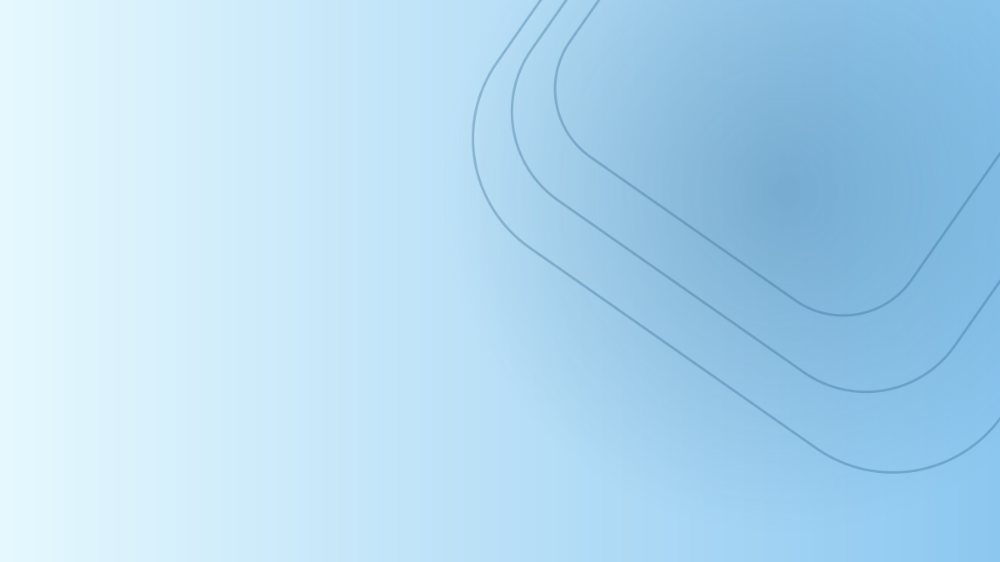

Aa
Primary accent
--color-primaryPrimary actionsA flexible visual foundation for discovering communities, meeting people, and bringing good things together across Türkiye.
YOUR PEOPLE ARE OUT THERE
Shared interests make a big city feel smaller.
Soft surfaces keep the interface easy to scan; deep brown marks important actions.
A clean English/Arabic pairing with RTL support built in from the start.
Colors, type, sizing, shape, shadows, and density can change without rewriting components.
Named by purpose, not by the color itself. Switch themes above to see semantic roles update.
Contrast rule: the deep brown accent is paired with white text for readable button labels. Pale sand is reserved for quiet highlights and selected states.
Two carefully paired families, with their own line-height and weight tokens.
Find your people.
Good communities start with a shared interest. Discover a group, join an event, and make the city feel more familiar.
اكتشف مجتمعك.
ابدأ باهتمام مشترك، تعرّف على أشخاص جدد، وشارك في فعاليات تجعل الحياة في المدينة أقرب وأسهل.
Display / 48Community starts here3rem / 1.08Heading 1 / 36Find your people2.25rem / 1.2Heading 2 / 28Events worth showing up for1.75rem / 1.25Body / 16Find a community that shares your interests.1rem / 1.5Small / 14Istanbul · 24 October · 18:300.875rem / 1.45Consistent spacing and geometry make components feel related across screens.
space-1 · 4space-2 · 8space-3 · 12space-4 · 16space-6 · 24space-8 · 32SmallMediumLargeXLPill--motion-duration-base · 180ms--motion-duration-slow · 280msReduced-motion settings disable non-essential transitions.
Primary actions stand out. Secondary actions stay visible without competing.
Clear labels, calm borders, and useful feedback. Inputs inherit theme and density tokens.
Feedback should explain what to do next.
Discovery specimens based on the fields and actions in Wasl’s resource cards.

A friendly running community for every pace, from first 5Ks to weekend trail routes.
Browser specimens for the shared controls and compositions used in Wasl.
Native controls demonstrate the field styling. The app uses its own calendar and picker composition.
1–12 of 24 results
No events match these filters.
Review filtersLoading events…
Try again in a moment.
Keep messages specific, accessible, and visually consistent across themes.
Your request to join Istanbul Runners has been sent to the organizers.
Add your interests to get more relevant community recommendations.
Only two places remain for this event. Join the waitlist if it fills up.
Check your connection and try again. Your previous information is still here.
Components read semantic variables. Themes override token values; Tailwind and shadcn/ui use the same contract.
<html
data-theme="wasl"
data-mode="light"
data-density="comfortable"
>